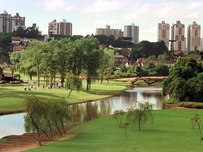

Linha Turismo
Uma das formas de conhecer Curitiba é embarcando em um dos ônibus double decker da Linha Turismo,
linha especial que circula pelos principais pontos turísticos da cidade, entre eles, parques,
museus, teatros, mirantes, espaços culturais, centro histórico, bairro gastronômico, memoriais
étnicos e o recém-reformado Mercado Municipal.
Com a aquisição do cartão de embarque, no valor de R$ 50,00, os embarques são ilimitados em todos os
atrativos do percurso, pelo período de 24 horas. O visitante poderá desembarcar e desfrutar do local
que escolher, reembarcando no próximo ônibus, disponível a cada 30 minutos. O serviço opera
regularmente todos os dias, a partir das 08h30 horas até as 17 horas, com saída inicial na Rua 24
Horas, no centro da cidade. No entanto o passeio pode ser iniciado em qualquer ponto; os cartões são
vendidos diretamente nos ônibus.
O veículo double deck tem ocupação máxima de 65 pessoas (passageiros sentados). O preço da tarifa
de embarque é R$ 50.

Rotas de viagem
Rua 24 Horas
Restaurada, a Rua voltou a ostentar a arquitetura que a tornou conhecida mundo afora, como os grandes arcos e o relógio com as 24 horas do dia, e reabriu com um variado mix de comércio e serviços. ver mais.
Praça Rui Barbosa
Recebeu sua primeira urbanização em 1913. Fica no Centro de Curitiba, é um bom espaço de lazer e importante centro de conexão de transporte público. A Praça abriga o Mercado Central e está cercada por prédios históricos.
Museu Forroviario

Construído na antiga Estação, conta a história ferroviária do estado. O prédio anexo abriga o Shopping Estação, o Teatro de Bonecos Dr. Botica e o Estação Embratel Convention Center, um moderno centro de eventos.
Teatro Paiol
Construído em 1906, o antigo paiol de pólvora foi reciclado para se tornar teatro de arena em 1971. Batizado pelo poeta Vinícius de Moraes, marca o início da transformação de Curitiba.
Jardim Botânico
Marca registrada de Curitiba, foi inaugurado em 1991. A estrutura metálica abriga espécies botânicas de referência nacional. O Museu Botânico atrai pesquisadores do mundo todo.
Mercado Municipal
A Rodoferroviária de Curitiba, inaugurada em 1972, representa um marco no país em terminais de transporte, graças à sua concepção moderna e funcional. O Mercado Municipal é o tradicional ponto para comprar iguarias de todo o mundo.
Teatro Guaíra
Na Praça Santos Andrade localiza-se o Teatro Guaíra, um dos maiores da América Latina. À sua frente, do outro lado da praça, encontra-se a Universidade Federal do Paraná, a primeira do Brasil.
Paço da Liberdade

Recentemente restaurado, foi sede do governo municipal. É o único patrimônio de Curitiba tombado nas três esferas: nacional, estadual e municipal, e atualmente abriga um centro cultural.
Passeio Público
Situado na Praça Gibran Khalil, é uma construção moderna, inspirada nos povos do deserto, e seu interior abriga uma biblioteca. O Passeio Público foi o primeiro parque público e o primeiro zoológico de Curitiba. No início abrigava animais de grande porte, porém, atualmente, só existem animais pequenos.
Centro Cívico

Sede dos Poderes do Estado do Paraná, foi implantado em 1953, no centenário da emancipação política do estado.
Bosque do Papa
Memorial da imigração polonesa, é composto por sete casas feitas de troncos encaixados. Foi inaugurado em 1980, logo após a visita do Papa João Paulo II a Curitiba.
Museu Oscar Niemeyer
Maior e mais moderno museu do Brasil. Projetado pelo arquiteto Oscar Niemeyer, o "olho" completa uma antiga obra que ele mesmo construiu, em 1976.
Bosque Alemão
Bosque em homenagem aos imigrantes alemães. Entre os destaques, a trilha de João e Maria, dos contos dos irmãos Grimm, a Casa Encantada, o oratório Bach e a Torre dos Filósofos, com uma bela vista de Curitiba.
Universidade Livre do Meio Ambiente
g Primeira universidade criada para estudar o desenvolvimento com preservação ambiental. Foi inaugurada em 1992, com a presença do oceanógrafo Jacques Costeau.
Parque São Lourenço

Uma antiga fábrica de cola deu lugar ao Centro de Criatividade, que oferece cursos, oficinas e exposições. O parque também possui uma pista de corrida e um lago cercado por mata nativa.
Ópera de Arame
Construída em estrutura tubular, a Ópera de Arame é um espaço mágico integrado à natureza. Ao seu lado, a Pedreira Paulo Leminski é palco de grandes acontecimentos artísticos e culturais.
Parque Tanguá
Construído em 1906, o antigo paiol de pólvora foi reciclado para se tornar teatro de arena em 1971. Batizado pelo poeta Vinícius de Moraes, marca o início da transformação de Curitiba.
Parque Tingui
O Parque Tingui lembra os primeiros ocupantes dos Campos de Curitiba, os índios da nação Guarani.
Memorial Ucraniano
O Memorial Ucraniano está localizado no Parque Tingui, e é uma homenagem ao centenário da chegada dos pioneiros da etnia. Com cúpula de bronze, o memorial é uma réplica da Igreja de São Miguel, na Serra do Tigre, em Mallet.
Portal Italiano

O Portal italiano sinaliza a entrada do bairro de Santa Felicidade e reproduz as edificações típicas da imigração italiana do bairro.
Santa Felicidade
Colônia formada em 1878 por imigrantes italianos. É o principal eixo gastronômico de curitiba. As casas típicas são unidades de interesse de preservação pelo valor histórico, arquitetônico ou sentimental.
Parque Barigui
Implantado em 1972, é um dos maiores da cidade, sendo refúgio de diversos animais nativos e migratórios. Também foi escolhido pelos curitibanos como um dos preferidos para as caminhadas diárias. O parque possui equipamentos de ginástica e parque de diversões, além de um espaço para exposição e eventos. É onde se localiza o Museu do Automóvel.
Torre Panorâmica
Única torre de telefonia do Brasil com mirante aberto a visitação. Com 109,5 metros de altura, foi inaugurada em 1991 e é um dos pontos turísticos mais visitados de Curitiba. O mirante oferece uma vista de 360º da cidade.
Setor Histórico
O Setor Histórico abriga as ruínas da Igreja de São Francisco de Paula, nunca concluída, o Relógio das Flores, a Fonte da Memória a Fundação Cultural de Curitiba, antigos casarões transformados em espaços culturais e a Igreja do Rosário, onde é celebrada, aos domingos pela manhã, a Missa do Turista. Também aos domingos, acontece a feira de artesanato, ponto de encontro dos curitibanos. Um dos destaques do setor histórico é o Memorial de Curitiba.
Praça Tiradentes

Marco zero da cidade, abriga a Catedral Basílica Menor Nossa Senhora da Luz dos Pinhais.
Rua Flores

Trecho da principal rua de Curitiba, foi o primeiro calçadão para pedestres do país e um dos marcos da revolução cultural da cidade.